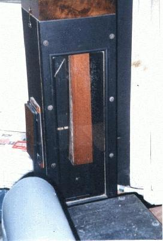
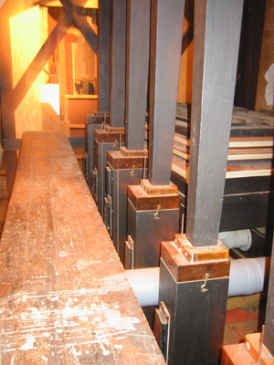

|
Bass Trombone English Bassposaune German Double Trombone English |
Contra Posaune German Contraposaune German Contra Trombone English |
|
Grossposaune German Grober Posaunen-Untersatz German |
A chorus reed, considered imitative by some, of 16', 32' or (in one instance) 64' pitch, usually found in the pedal. Its resonators are inverted-conical or inverted-pyramidal in form, and may be of wood, zinc, pipe metal, or in the 32' octave (according to Audsley) sheet iron. Pneumatic starters are often used in the 32' octave for quicker speech. While commonly a beating reed, it has been made as a free reed in some cases.
The tone of this stop is powerful, loud and brilliant. Some authorities distinguish between the Posaune and the Trombone, considering the latter to be of smaller scale and less powerful than the former, but other authorities consider them synonymous.
See Trombone; compare with Grobposaune.
The most common of these stop-names is Contraposaune, with about 50 examples in Osiris. Contra Trombone comes in second, with 20 examples. Of the others, all known examples are listed below. Examples at 32' outnumber those at 16' by about 2 to 1. No examples of Grossposaune are known. Contributions welcome.
Contra Trombone 64', Pedal; Town Hall Auditorium, Sydney, Australia; William Hill & Son, Norman & Beard 1886-90. A sound clip is available below. (This is one of only two true 64' stops in existence, the other being the Diaphone Profundo in Atlantic City.
Contra Trombone 16', Back Great; Town Hall, Leeds, England; Gray & Davison 1859.
Bass Trombone 32', Pedal; Norwich Cathedral, Norwich, Norfolk, England; Hill, Norman & Beard 1941.
Bass Trombone 16', Solo; St. Matthew's Lutheran Church, Hanover, Pennsylvania, USA; Austin 1925.
Double Trombone 32', Pedal; Durham Cathedral, Durham, England; Harrison & Harrison 1970.
Double Trombone 32', Pedal; St. George's Chapel, Windsor Castle, England; Harrison & Harrison 1965.
Double Trombone 32', Pedal; Royal Albert Hall, London, England; Willis 1872.
Bassposaune 8', Pedal; Hans-Sachs-Haus, Gelsenkirchen, Germany; Walcker 1927.
Grober Posaunen-Untersatz; St. Marien, Halle, Germany?. This is the only known example of this name, cited by Adlung with no further information.
See the Sound Files appendix for general information.
| Contra Trombone 64', Pedal | Town Hall Auditorium, Sydney, Australia | William Hill & Son, Norman & Beard 1886-90 | bottom 15 notes |
|
 The photo on the left shows the low CCCCC boot. The reed and shallot can be seen through the glass window. The bellows on the side of the boot is a pneumatic starter. Photo by John Ledwon; permission pending. |
 The photo on the right appears courtesy of Stephen Bicknell. Click on it for a larger image. |
|
Original website compiled by Edward L. Stauff. For educational use only. BassTrombone.html - Last updated 6 October 2006. |
Home Full Index |
{kind=link}